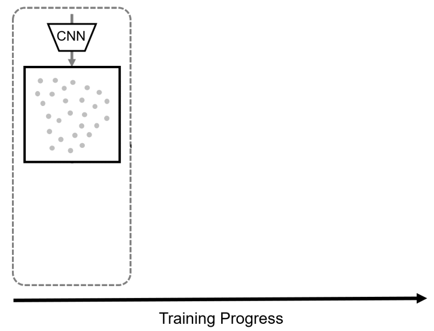

Biography
Welcome! I am a third-year Ph.D. Student at University of California, Merced, advised by amazing Ming-Hsuan Yang. I am also a research intern at Snap, where I am privileged to work with Aliaksandr Siarohin, Sergey Tulyakov, Jun-Yan Zhu, and Kfir Aberman. My research aims at building advanced video generation models with groundbreaking applications. Previously, I did my M.S. and B.S. at National Taiwan University. If you would like to learn more about me, here is my [CV] (updated in Jan 2025) or reach out to me at tsaishienchen [at] gmail.com!
I am honored to receive Graduate Student Opportunity Program Fellowship.
Selected Publications
Check the full pubications list in [CV]
Multi-subject Open-set Personalization in Video Generation
A video model with built-in multi-subject, open-set personalization capabilities for both foreground objects and background.
arXiv preprint, 2025
Panda-70M: Captioning 70M Videos with Multiple Cross-Modality Teachers
A large-scale video dataset with high-quality automatic caption annotations.
CVPR, 2024
Snap Video: Scaled Spatiotemporal Transformers for Text-to-Video Synthesis
A FiT based T2V model, allowing efficient training on billions of parameters.
CVPR, 2024 [Highlight]
Motion-Conditioned Diffusion Model for Controllable Video Synthesis
A conditional diffusion model, generating a video from a starting image frame and a set of strokes.
arXiv preprint, 2023

Incremental False Negative Detection for Contrastive Learning
Following the training process of contrastive learning when the embedding space becomes more semantically structural, we incrementally detects more reliable false negatives and explicitly remove them.
ICLR, 2022
Orientation-aware Vehicle Re-identification with Semantics-guided Part Attention Network
Predict the spatial attention map for each vehicle view given only image-level label for training, and introduce a distance metric emphasizing on the difference in co-occurrence vehicle views.
ECCV, 2020 [Oral]
Viewpoint-Aware Channel-Wise Attentive Network for Vehicle Re-Identification
A framework channel-wisely reweighing the importance of each feature map according to the viewpoint of input vehicle image.
CVPR Workshops, 2020
Top